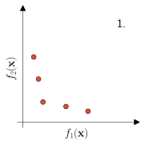
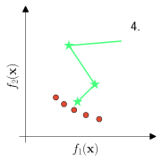

Knowledge Discovery for
Interactive Decision Support and
Knowledge-Driven Optimization
Main Supervisor:
Sunith Bandaru
Co-supervisors:
Amos Ng
Maria Riveiro
27 Sep, 2023
Background
Multi-Criteria Decision Making
- How to involve the DM? (Miettinen 1999)
- no preference — No preferences are available or used
- a priori — Express preferences before the optimization
- a posteriori — Express preferences after optimization
- interactive — Update preferences during optimization



Variable Trends
- Trend Mining 2.0
- Find if decision variables follow a trend in the objective space
- Monotonic trends in the decision space
- Find reference directions in the objective space that has the most interesting trends in the decision space
Finding an optimized reference direction Projection of solutions on to the reference direction Calculation of interestingness scores Boxplot visualization of interestingness scores
\(\quad\)

\(\quad\)
Paper I: Smedberg, Henrik, Bandaru, Sunith, Ng, Amos H.C., and Deb, Kalyanmoy (2020). “Trend Mining 2.0: Automating the Discovery of Variable Trends in the Objective Space”. In: 2020 IEEE Congress on Evolutionary Computation (CEC), pp. 1–8
Variable Importance
- Influence Score
- Quantify variables’ relations to
diversity or convergence - InfS-P
(INFluence Score for Pareto-front) - InfS-R
(INFluence Score for Ranks) - Finds a normalized score for each variable
- Find expected variable groups in tested problems
- Applied to an industrial use-case
- Quantify variables’ relations to
InfS-P
InfS-R


Paper II: Smedberg, Henrik and Bandaru, Sunith (2020). “Finding Influential Variables in Multi-Objective optimization Problems”. In: 2020 IEEE Symposium Series on Computational Intelligence (SSCI), pp. 173–180
RQ2: Interactive Decision Support
- Interactive DSS for knowledge discovery with FPM rules
- Solution exploration
- Preference elicitation
- Knowledge discovery
- Knowledge visualization
FPM rule visualization using graph-based interface


Paper III: Smedberg, Henrik and Bandaru, Sunith (2023). “Interactive Knowledge Discovery and Knowledge Visualization for Decision Support in Multi-Objective Optimization”. In: European Journal of Operational Research 306.3, pp. 1311–1329
Mimer: Openly Available Instantiation of DSS
- Mimer
- Openly available web tool
- https://assar.his.se/mimer/

- User study
- Representative real-world tasks
- 20 participants, overall positive feedback

Paper IV: Smedberg, Henrik, Bandaru, Sunith, Riveiro, Maria, and Ng, Amos H.C. (2023). “Mimer: A Web-Based Tool for Knowledge Discovery in Multi-Criteria Decision Support”. Submitted to: IEEE Computational Intelligence Magazine
Offline KDO: Reconfigurable Manufacturing System Use-case
- Reconfigurable manufacturing system (RMS)
- Considered different scenarios of the same RMS
- Grouped scenarios together based on operators and proportions between parts
- Discovered knowledge among the groups
- Used Mimer for interactive knowledge discovery
- Offline KDO
- Applied knowledge as constraints in the optimization of new scenarios
- Obtained better convergence
| \(\begin{gathered} \textbf{Group} \\ \textbf{NO} \;\; \textbf{Proportion} \end{gathered}\) | Rule Interaction | Sig. | Unsig. |
|---|---|---|---|
| 7 Proppportion | \(A_{10} = 2 ∧ B_4 \neq 3 ∧ B_5 = 2 ∧ B_{23} = 1\) | 100% | 10.13% |
| 8 Proppportion | \(A_{17} = 2 ∧ A_{27} \neq 3 ∧ B_7 = 1 ∧ B_{16} = 2\) | 96.43% | 12.89% |
| 9 Proppportion | \(A_{28} = 1 ∧ B_7 = 1 ∧ B_8 = 3 ∧ B_9 \neq 1\) | 91.67% | 4.89% |
| NO\(\;\;\) 30%/70% | \(A_{14} = 3 ∧ B_3 = 1 ∧ B_{10} \neq 1 ∧ B_{23} \neq 3\) | 97.06% | 29.23% |
| NO\(\;\;\) 70%/30% | \(A_{14} = 2 ∧ A_{17} = 2 ∧ B_4 \neq 3 ∧ B_{11} \neq 2\) | 92.11% | 10.89% |

Paper V: Smedberg, Henrik, Barrera-Diaz, Carlos Alberto, Nourmohammadi, Amir, Bandaru, Sunith, and Ng, Amos H. C. (2022). “Knowledge-Driven Multi-Objective Optimization for Reconfigurable Manufacturing Systems”. In: Mathematical and Computational Applications 27.6
Online KDO: Knowledge-Driven Genetic Operator for Preference-Based MOEAs
- Knowledge-driven mutation operator
- Sample an empirical distribution model built from FPM rules
- Modular approach for preference-based MOEAs
- R-metric (Li, Deb, and Yao 2017)
- EH-metric (Bandaru and Smedberg 2019)


Paper VI: Smedberg, Henrik and Bandaru, Sunith (2022). “A Modular Knowledge-Driven Mutation Operator for Reference-Point Based Evolutionary Algorithms”. In: 2022 IEEE Congress on Evolutionary Computation (CEC), pp. 1–8
KDO Using Variable Importance
- Variable importance for Offline and Online KDO
- Variable importance (InfS-R)
- Discovered either offline or online
- Apply knowledge to restrict
convergence-related variables in crossover - Improvement in terms of Hypervolume (HV) and
convergence rate (AUC)

Paper VII: Smedberg, Henrik, Bandaru, Sunith, and Ng, Amos H.C (2023). “Knowledge-Driven Multi-Objective Optimization Using Variable Importance”. Completed Manuscript